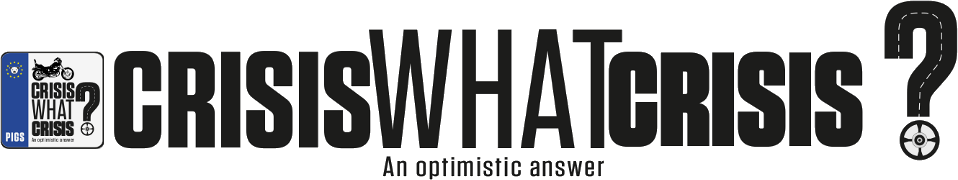

<iframe width="560" height="315" src="http://www.youtube.com/embed/ln3tGnzGT9k" frameborder="0" allowfullscreen></iframe>

Un documental que retrata la Europa de 2012.

Un viaje en moto que parte de Galicia, en el extremo Noroeste de la Península ibérica y llega hasta el Pireo, en Grecia, pasando por Portugal, España e Italia (PIGS)*. Una mirada crítica a la CRISIS.

Una respuesta práctica y valiente a las preguntas que si no nos hacemos deberíamos hacernos:
Qué es la crisis? 
De dónde viene?
A dónde nos lleva? 
Y ahora, qué?

SPONSORS

